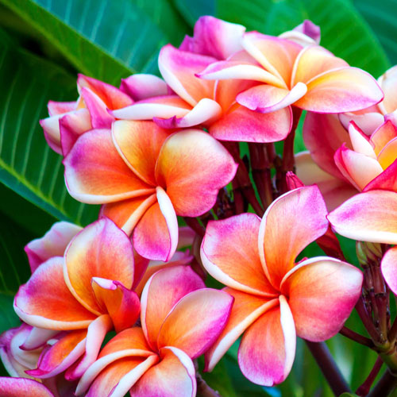
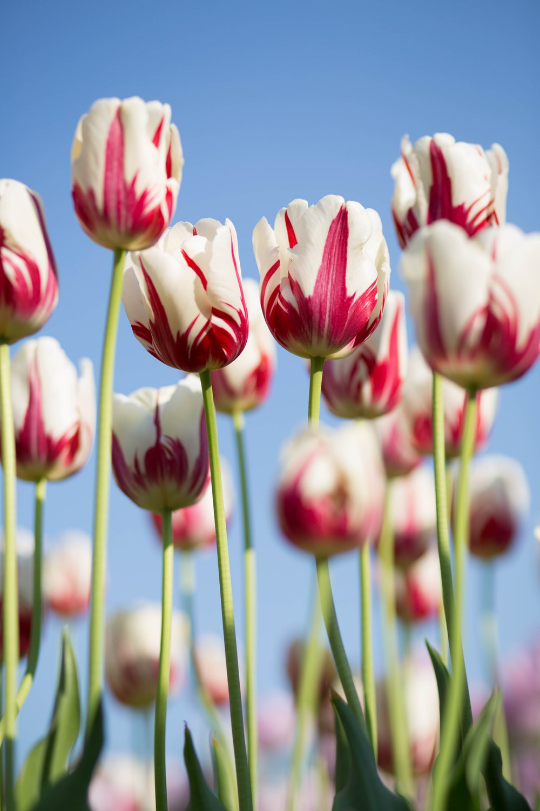

Rose
rose stand for love

bundle flowers
bundle flowers are for V-Day.

dahilia
this is really romantic, is it?

sun flower
sun flower stands for energy.

colorful flower
One day, you will meet a person who looks like rainbow.
daisy flower
Once I saw the daisy on campus, I was obsessed with them.

tropical flower
it looks stunning, when you feel blue, just look at them.

tulip
Tulip is the most elegant flower in the world, at least I think so.
cosmos
cosmos is lovely, like a cute girl who is in love.
big sun flower
do you know that big sun flower's seed can be eat? because it is a kinds of snack.